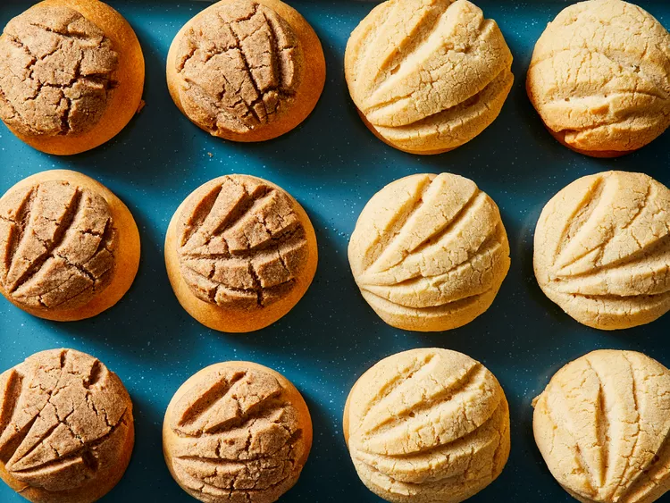

Conchas

Describtion:
Conchas are traditional Mexican sweet bread rolls (a.k.a. pan dulce). Its name comes from the roll’s seashell-like appearance. Conchas consist of a sweet bread base and crunchy sugar topping.
Ingredients:
- For the bread: warm water, yeast, all-purpose flour, evaporated milk, white sugar, melted butter, an egg, salt, and ground cinnamon
- For the topping: white sugar, softened butter, all-purpose flour, ground cinnamon, vanilla extract
Steps:
- Activate the yeast.
- Make the dough, then turn it out on a floured surface and knead until it’s elastic.
- Let the dough rise in an oiled, covered bowl.
- Make the topping. Flavor half of the topping with cinnamon and the other half with vanilla.
- Roll the dough into balls and pat the topping onto each one.
- Cut grooves into the topping, then let rise again.
- Bake in the preheated oven until lightly golden brown.